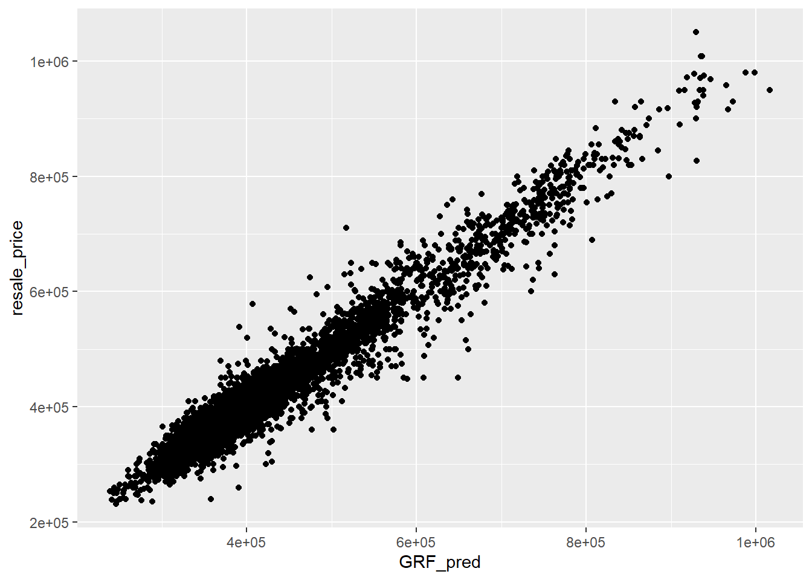

pacman::p_load(sf, spdep, GWmodel, SpatialML, tmap, rsample, Metrics, tidyverse)
set.seed(1234)Hands On Exercise 8- Geographically Weighted Predictive Models
8 Introduction
Predictive modeling leverages statistical learning or machine learning techniques to forecast outcomes, typically focusing on future events. It relies on a dataset of known outcomes and predictor variables to train and fine-tune the model.
Geospatial predictive modeling is grounded in the understanding that events of interest aren’t randomly or uniformly distributed across space. Instead, their occurrence is influenced by a number of geospatial factors such as infrastructure, sociocultural dynamics, and topography.
By analyzing geographically referenced data, geospatial predictive modeling seeks to capture and describe these influences and constraints, creating spatial correlations between historical event locations and relevant environmental factors.
8.1 Data and Packages
8.1.1 The Data
Aspatial dataset:
- HDB Resale data: a list of HDB resale transacted prices in Singapore from Jan 2017 onwards. It is in csv format which can be downloaded from Data.gov.sg.
Geospatial dataset:
- MP14_SUBZONE_WEB_PL: a polygon feature data providing information of URA 2014 Master Plan Planning Subzone boundary data. It is in ESRI shapefile format. This data set was also downloaded from Data.gov.sg
Locational factors with geographic coordinates:
Downloaded from Data.gov.sg.
Eldercare data is a list of eldercare in Singapore. It is in shapefile format.
Hawker Centre data is a list of hawker centres in Singapore. It is in geojson format.
Parks data is a list of parks in Singapore. It is in geojson format.
Supermarket data is a list of supermarkets in Singapore. It is in geojson format.
CHAS clinics data is a list of CHAS clinics in Singapore. It is in geojson format.
Childcare service data is a list of childcare services in Singapore. It is in geojson format.
Kindergartens data is a list of kindergartens in Singapore. It is in geojson format.
Downloaded from Datamall.lta.gov.sg.
MRT data is a list of MRT/LRT stations in Singapore with the station names and codes. It is in shapefile format.
Bus stops data is a list of bus stops in Singapore. It is in shapefile format.
Locational factors without geographic coordinates:
Downloaded from Data.gov.sg.
- Primary school data is extracted from the list on General information of schools from data.gov portal. It is in csv format.
Retrieved/Scraped from other sources
CBD coordinates obtained from Google.
Shopping malls data is a list of Shopping malls in Singapore obtained from Wikipedia.
Good primary schools is a list of primary schools that are ordered in ranking in terms of popularity and this can be found at Local Salary Forum.
8.1.2 The Packages
We will use the following packages for our analysis:
sf: R package for handling, analyzing, and visualizing spatial data using simple features.
spdep: R package for spatial dependence modeling, including spatial autocorrelation and regression analysis.
GWmodel: R package for geographically weighted regression (GWR) and other localized spatial models.
SpatialML: R package for spatial machine learning, offering tools for spatially explicit predictive modeling.
tmap: R package for creating thematic maps, offering a flexible and layered approach for spatial visualization.
rsample: R package for resampling datasets, facilitating model training and evaluation with various sampling methods.
Metrics: R package for calculating common metrics for regression and classification models, such as RMSE and accuracy.
tidyverse: A collection of R packages designed for data manipulation, analysis, and visualization in a consistent and coherent syntax.
We use the p_load() function of the pacman package as shown in the code chunk below to import these packages into our environment.
8.2 Data Preparation
We start by importing our rds file into the environment,
mdata <- read_rds("data/mdata.rds")8.2.1 Data Sampling
The entire data are split into training and test data sets with 65% and 35% respectively by using the initial_split() function of the rsample package.
After splitting the data, we will store them as RDS files. We use the write_rds() function to create the RDS file and the read_rds() function to load the RDS file into our environment. This facilitates computational efficiency.
set.seed(1234)
resale_split <- initial_split(mdata,
prop = 6.5/10,)
train_data <- training(resale_split)
test_data <- testing(resale_split)write_rds(train_data, "data/train_data.rds")
write_rds(test_data, "data/test_data.rds")train_data=read_rds('data/train_data.rds')
test_data=read_rds('data/test_data.rds')8.3 Correlation Matrix
After successfully completing the above split, we proceed to compute the correlation matrix.
As stated in previous exercises, this is a key step in predictive modelling as it helps you identify if there is multicollinearity.
Having a high level of multi-collinearity can lead to unsatisfactory models.
mdata_nogeo <- mdata %>%
st_drop_geometry()
corrplot::corrplot(cor(mdata_nogeo[, 2:17]),
diag = FALSE,
order = "AOE",
tl.pos = "td",
tl.cex = 0.5,
method = "number",
type = "upper")
From the above, we infer that there is no multicollinearity as there is no value above 0.8.
We can now proceed with our analysis.
8.4 Building a non-spatial multiple linear regression model
We create a model using the lm() function as shown in the code chunk below.
price_mlr <- lm(resale_price ~ floor_area_sqm +
storey_order + remaining_lease_mths +
PROX_CBD + PROX_ELDERLYCARE + PROX_HAWKER +
PROX_MRT + PROX_PARK + PROX_MALL +
PROX_SUPERMARKET + WITHIN_350M_KINDERGARTEN +
WITHIN_350M_CHILDCARE + WITHIN_350M_BUS +
WITHIN_1KM_PRISCH,
data=train_data)
summary(price_mlr)
Call:
lm(formula = resale_price ~ floor_area_sqm + storey_order + remaining_lease_mths +
PROX_CBD + PROX_ELDERLYCARE + PROX_HAWKER + PROX_MRT + PROX_PARK +
PROX_MALL + PROX_SUPERMARKET + WITHIN_350M_KINDERGARTEN +
WITHIN_350M_CHILDCARE + WITHIN_350M_BUS + WITHIN_1KM_PRISCH,
data = train_data)
Residuals:
Min 1Q Median 3Q Max
-205193 -39120 -1930 36545 472355
Coefficients:
Estimate Std. Error t value Pr(>|t|)
(Intercept) 107601.073 10601.261 10.150 < 2e-16 ***
floor_area_sqm 2780.698 90.579 30.699 < 2e-16 ***
storey_order 14299.298 339.115 42.167 < 2e-16 ***
remaining_lease_mths 344.490 4.592 75.027 < 2e-16 ***
PROX_CBD -16930.196 201.254 -84.124 < 2e-16 ***
PROX_ELDERLYCARE -14441.025 994.867 -14.516 < 2e-16 ***
PROX_HAWKER -19265.648 1273.597 -15.127 < 2e-16 ***
PROX_MRT -32564.272 1744.232 -18.670 < 2e-16 ***
PROX_PARK -5712.625 1483.885 -3.850 0.000119 ***
PROX_MALL -14717.388 2007.818 -7.330 2.47e-13 ***
PROX_SUPERMARKET -26881.938 4189.624 -6.416 1.46e-10 ***
WITHIN_350M_KINDERGARTEN 8520.472 632.812 13.464 < 2e-16 ***
WITHIN_350M_CHILDCARE -4510.650 354.015 -12.741 < 2e-16 ***
WITHIN_350M_BUS 813.493 222.574 3.655 0.000259 ***
WITHIN_1KM_PRISCH -8010.834 491.512 -16.298 < 2e-16 ***
---
Signif. codes: 0 '***' 0.001 '**' 0.01 '*' 0.05 '.' 0.1 ' ' 1
Residual standard error: 61650 on 10320 degrees of freedom
Multiple R-squared: 0.7373, Adjusted R-squared: 0.737
F-statistic: 2069 on 14 and 10320 DF, p-value: < 2.2e-16write_rds(price_mlr, "data/price_mlr.rds" ) price_mlr=read_rds('data/price_mlr.rds')8.5 gwr predictive method
In this section, we calibrate a model to predict HDB resale price by using the geographically weighted regression method of the GWmodel package.
8.5.1 Converting the sf data.frame to SpatialPointDataFrame
We implement the as_Spatial() function of the sf package to conduct the conversion as shown in the code chunk below.
train_data_sp <- as_Spatial(train_data)
train_data_spclass : SpatialPointsDataFrame
features : 10335
extent : 11597.31, 42623.63, 28217.39, 48741.06 (xmin, xmax, ymin, ymax)
crs : +proj=tmerc +lat_0=1.36666666666667 +lon_0=103.833333333333 +k=1 +x_0=28001.642 +y_0=38744.572 +ellps=WGS84 +towgs84=0,0,0,0,0,0,0 +units=m +no_defs
variables : 17
names : resale_price, floor_area_sqm, storey_order, remaining_lease_mths, PROX_CBD, PROX_ELDERLYCARE, PROX_HAWKER, PROX_MRT, PROX_PARK, PROX_GOOD_PRISCH, PROX_MALL, PROX_CHAS, PROX_SUPERMARKET, WITHIN_350M_KINDERGARTEN, WITHIN_350M_CHILDCARE, ...
min values : 218000, 74, 1, 555, 0.999393538715878, 1.98943787433087e-08, 0.0333358643817954, 0.0220407324774434, 0.0441643212802781, 0.0652540365486641, 0, 6.20621206270077e-09, 1.21715176356525e-07, 0, 0, ...
max values : 1186888, 133, 17, 1164, 19.6500691667807, 3.30163731686804, 2.86763031236184, 2.13060636038504, 2.41313695915468, 10.6223726149914, 2.27100643784442, 0.808332738794272, 1.57131703651196, 7, 20, ... 8.5.2 Computing adaptive bandwidth
We now use the bw.gwr() function of the GWmodel package to determine the optimal bandwidth to be used.
The code chunk below helps us determine adaptive bandwidth and the Cross Validation (CV) method is used to determine the optimal bandwidth.
bw_adaptive <- bw.gwr(resale_price ~ floor_area_sqm +
storey_order + remaining_lease_mths +
PROX_CBD + PROX_ELDERLYCARE + PROX_HAWKER +
PROX_MRT + PROX_PARK + PROX_MALL +
PROX_SUPERMARKET + WITHIN_350M_KINDERGARTEN +
WITHIN_350M_CHILDCARE + WITHIN_350M_BUS +
WITHIN_1KM_PRISCH,
data=train_data_sp,
approach="CV",
kernel="gaussian",
adaptive=TRUE,
longlat=FALSE)write_rds(bw_adaptive, "data/bw_adaptive.rds")bw_adaptive <- read_rds("data/bw_adaptive.rds")8.5.3 Converting the test data from sf data.frame to SpatialPointDataFrame
test_data_sp <- test_data %>%
as_Spatial()
test_data_spclass : SpatialPointsDataFrame
features : 5566
extent : 11597.31, 42623.63, 28287.8, 48669.59 (xmin, xmax, ymin, ymax)
crs : +proj=tmerc +lat_0=1.36666666666667 +lon_0=103.833333333333 +k=1 +x_0=28001.642 +y_0=38744.572 +ellps=WGS84 +towgs84=0,0,0,0,0,0,0 +units=m +no_defs
variables : 17
names : resale_price, floor_area_sqm, storey_order, remaining_lease_mths, PROX_CBD, PROX_ELDERLYCARE, PROX_HAWKER, PROX_MRT, PROX_PARK, PROX_GOOD_PRISCH, PROX_MALL, PROX_CHAS, PROX_SUPERMARKET, WITHIN_350M_KINDERGARTEN, WITHIN_350M_CHILDCARE, ...
min values : 230888, 74, 1, 546, 1.00583660772922, 3.34897933104965e-07, 0.0474019664161957, 0.0414043955932523, 0.0502664084494264, 0.0907500295577619, 0, 4.55547870890763e-09, 1.21715176356525e-07, 0, 0, ...
max values : 1050000, 138, 14, 1151, 19.632402730488, 3.30163731686804, 2.83106651960209, 2.13060636038504, 2.41313695915468, 10.6169590126272, 2.26056404492346, 0.79249074802552, 1.53786629004208, 7, 16, ... 8.5.4 Constructing the adaptive bandwidth gwr model
We can now calibrate the gwr-based hedonic pricing model by using adaptive bandwidth and Gaussian kernel as shown in the code chunk below.
gwr_adaptive <- gwr.basic(formula = resale_price ~
floor_area_sqm + storey_order +
remaining_lease_mths + PROX_CBD +
PROX_ELDERLYCARE + PROX_HAWKER +
PROX_MRT + PROX_PARK + PROX_MALL +
PROX_SUPERMARKET + WITHIN_350M_KINDERGARTEN +
WITHIN_350M_CHILDCARE + WITHIN_350M_BUS +
WITHIN_1KM_PRISCH,
data=train_data_sp,
bw=bw_adaptive,
kernel = 'gaussian',
adaptive=TRUE,
longlat = FALSE)write_rds(gwr_adaptive, 'data/gwr_adaptive.rds')gwr_adaptive=read_rds('data/gwr_adaptive.rds')8.5.5 Computing adaptive bandwidth for the test data
gwr_bw_test_adaptive <- bw.gwr(resale_price ~ floor_area_sqm +
storey_order + remaining_lease_mths +
PROX_CBD + PROX_ELDERLYCARE + PROX_HAWKER +
PROX_MRT + PROX_PARK + PROX_MALL +
PROX_SUPERMARKET + WITHIN_350M_KINDERGARTEN +
WITHIN_350M_CHILDCARE + WITHIN_350M_BUS +
WITHIN_1KM_PRISCH,
data=test_data_sp,
approach="CV",
kernel="gaussian",
adaptive=TRUE,
longlat=FALSE)write_rds(gwr_bw_test_adaptive, 'data/gwr_bw_test_adaptive.rds')gwr_bw_test_adaptive=read_rds('data/gwr_bw_test_adaptive.rds')8.5.6 Computing predicted values of the test data
The gwr.predict() function is applied as shown in the code chunk below.
Computation
gwr_pred <- gwr.predict(formula = resale_price ~
floor_area_sqm + storey_order +
remaining_lease_mths + PROX_CBD +
PROX_ELDERLYCARE + PROX_HAWKER +
PROX_MRT + PROX_PARK + PROX_MALL +
PROX_SUPERMARKET + WITHIN_350M_KINDERGARTEN +
WITHIN_350M_CHILDCARE + WITHIN_350M_BUS +
WITHIN_1KM_PRISCH,
data=train_data_sp,
predictdata = test_data_sp,
bw=40,
kernel = 'gaussian',
adaptive=TRUE,
longlat = FALSE,
theta = 0)RDS File creation
write_rds(gwr_pred, 'data/gwr_pred.rds')Reading RDS file
gwr_pred=read_rds('data/gwr_pred.rds')8.6 Preparing coordinates data
8.6.1 Extracting Coordinate Data
We extract the coordinates for each of the following three data-frames: mdata, train_data, test_data.
The st_coordinates() function is used.
coords <- st_coordinates(mdata)
coords_train <- st_coordinates(train_data)
coords_test <- st_coordinates(test_data)8.6.2 Dropping the Geometry Field
We now drop the geometry field from the train_data data-frame.
train_data <- train_data %>%
st_drop_geometry()8.7 Calibrating Random Forest Models
We will use the ranger package to do this. Please click the link to learn more about the ranger package, which is primarily used to conduct random forest analysis.
rf <- ranger(resale_price ~ floor_area_sqm + storey_order +
remaining_lease_mths + PROX_CBD + PROX_ELDERLYCARE +
PROX_HAWKER + PROX_MRT + PROX_PARK + PROX_MALL +
PROX_SUPERMARKET + WITHIN_350M_KINDERGARTEN +
WITHIN_350M_CHILDCARE + WITHIN_350M_BUS +
WITHIN_1KM_PRISCH,
data=train_data)
rfRanger result
Call:
ranger(resale_price ~ floor_area_sqm + storey_order + remaining_lease_mths + PROX_CBD + PROX_ELDERLYCARE + PROX_HAWKER + PROX_MRT + PROX_PARK + PROX_MALL + PROX_SUPERMARKET + WITHIN_350M_KINDERGARTEN + WITHIN_350M_CHILDCARE + WITHIN_350M_BUS + WITHIN_1KM_PRISCH, data = train_data)
Type: Regression
Number of trees: 500
Sample size: 10335
Number of independent variables: 14
Mtry: 3
Target node size: 5
Variable importance mode: none
Splitrule: variance
OOB prediction error (MSE): 728602496
R squared (OOB): 0.9495728 8.8 Calibrating Geographical Random Forest Models
We now use the SpatialMLpackage to create a model that will allow us to calibrate a model to predict HDB resale price. Please follow the embedded link to learn more about the SpatialML package.
8.8.1 Calibrating using training data
The code chunk below is used to calibrate a geographic ranform forest model by using the grf() function of the SpatialML package.
gwRF_adaptive <- grf(formula = resale_price ~ floor_area_sqm + storey_order +
remaining_lease_mths + PROX_CBD + PROX_ELDERLYCARE +
PROX_HAWKER + PROX_MRT + PROX_PARK + PROX_MALL +
PROX_SUPERMARKET + WITHIN_350M_KINDERGARTEN +
WITHIN_350M_CHILDCARE + WITHIN_350M_BUS +
WITHIN_1KM_PRISCH,
dframe=train_data,
bw=55,
kernel="adaptive",
coords=coords_train)
write_rds(gwRF_adaptive, "data/gwRF_adaptive.rds")gwRF_adaptive=read_rds('data/gwRF_adaptive.rds')8.8.2 Predicting by using test data
8.8.2.1 Preparing the test data
The code chunk below will be used to combine the test data with its corresponding coordinates data.
test_data <- cbind(test_data, coords_test) %>%
st_drop_geometry()8.8.2.2 Predicting with test data
We now implement the predict.grf() function of the spatialML package to predict the resale value by using the test data and gwRF_adaptive model calibrated earlier.
gwRF_pred <- predict.grf(gwRF_adaptive,
test_data,
x.var.name="X",
y.var.name="Y",
local.w=1,
global.w=0)write_rds(gwRF_pred, "data/GRF_pred.rds")GRF_pred <- read_rds("data/GRF_pred.rds")8.8.2.3 Converting the output into a data-frame
We implement the as.data.frame() function as shown in the code chunk below.
GRF_pred_df <- as.data.frame(GRF_pred)In the code chunk below, we use the cbind() function to append the predicted values onto the test_data data-frame.
#| eval: false
write_rds(test_data_p, "data/test_data_p.rds")test_data_p=read_rds('data/test_data_p.rds')8.8.3 Root Mean Square Error (RMSE)
The root mean square error (RMSE) allows us to measure how far the predicted values are from the observed values in a regression analysis.
In the code chunk below, the rmse() function of the Metrics package is used to compute the RMSE.
rmse(test_data_p$resale_price,
test_data_p$GRF_pred)[1] 27302.168.8.4 Visualizing the predicted values
Alternatively, we can use a scatterplot to visualise the actual resale price and the predicted resale price by using the code chunk below.
ggplot(data = test_data_p,
aes(x = GRF_pred,
y = resale_price)) +
geom_point()
A better predictive model would have the scattered points close to the diagonal line. The scatter plot can be also used to detect if any outliers in the model.